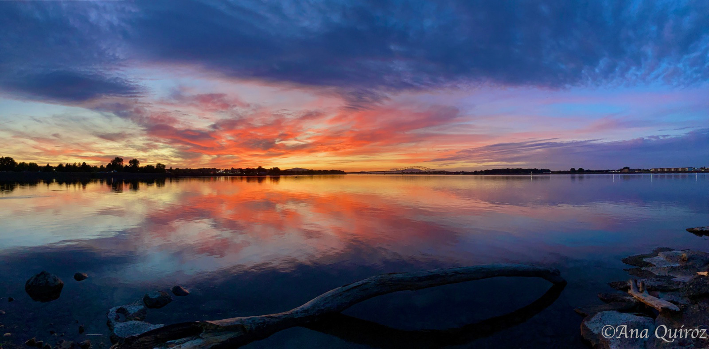
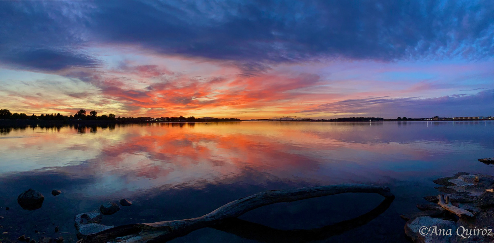

About Me
Welcome! Thank you very much for visiting my website. I am a woman dedicated to my two children and it fills me with happiness and satisfaction to see that I am helping to set a good example for them in their transformation into good men. I really enjoy their company as I get to know, discover, and explore beautiful places! My children are my engine, inspiration, and motivation in life! I really enjoy good talks with friends and laugh until my stomach hurts. I love making my mother laugh, she is my great example of strength and courage! I like to experience different foods and flavors as it is a pleasure that I really enjoy. But definitely God and my children are the main thing in my life. My favorite color is orange and yellow. I consider myself passionate about wonderful sunsets. Therefore photography is a beautiful passion that I have. Capturing the spectacular sunsets fills me with happiness as I have great admiration for Jehovah God's creation! "All his works are wonderfully admirable." Psalms 139:14. I'm here for any questions you may have. Thank you very much!
 
